项目背景与信息
EVERLIFE（伊甸天穹）是由合光重黎工作室发起的原创叙事 IP，以 HUP 原则（Hope / Unity / Promise）为核心价值，聚焦信念、人性与连结的表达。
本页展示该项目的品牌设计成果，完整策划内容可查看飞书文档。
Brand Design
从品牌定位到视觉规范的完整设计文档展示。
EVERLIFE（伊甸天穹）是由合光重黎工作室发起的原创叙事 IP，以 HUP 原则（Hope / Unity / Promise）为核心价值，聚焦信念、人性与连结的表达。
本页展示该项目的品牌设计成果，完整策划内容可查看飞书文档。
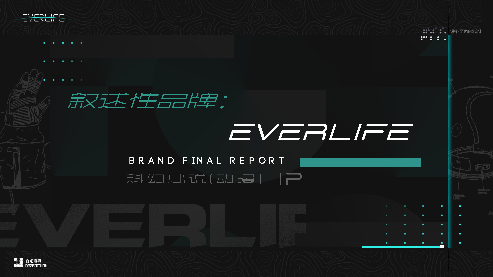
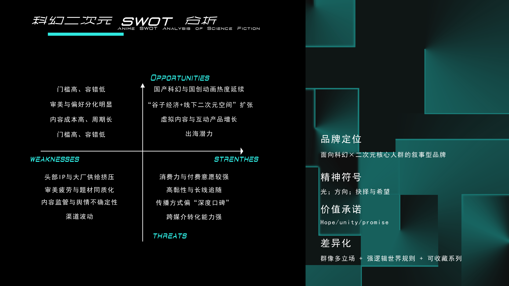
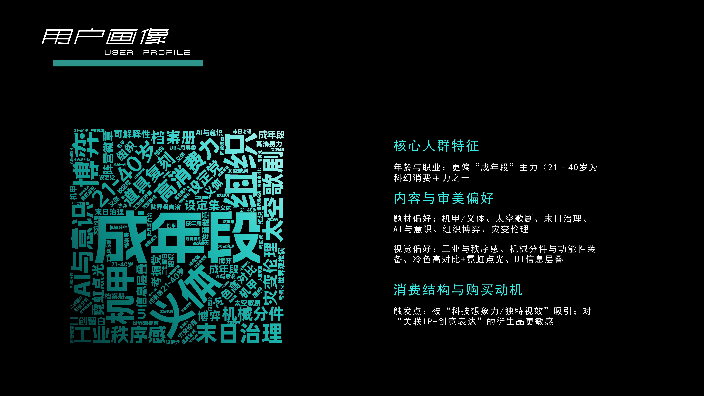
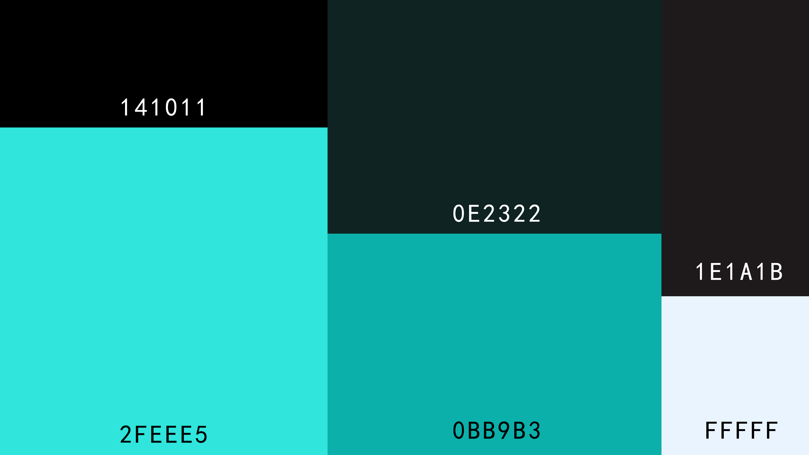
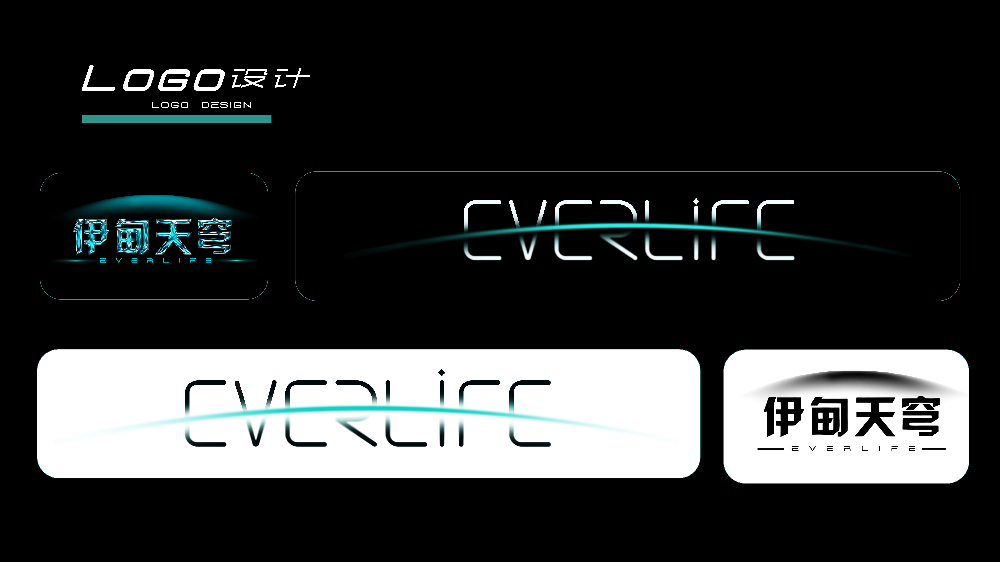
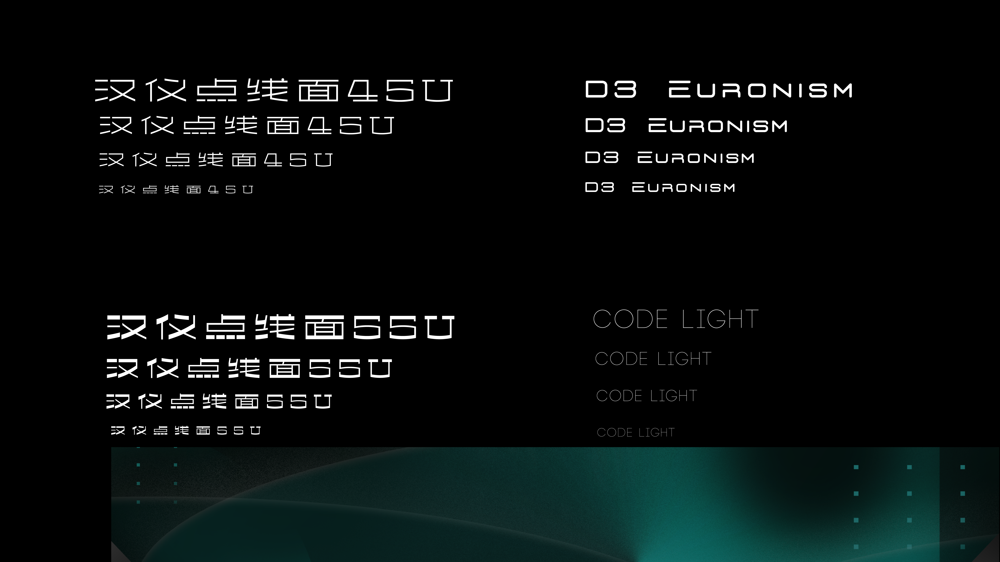

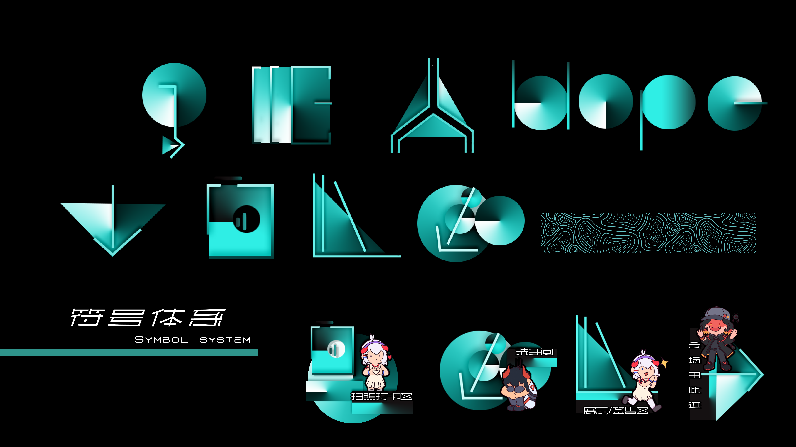

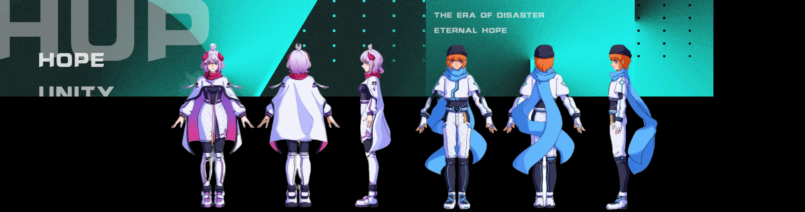
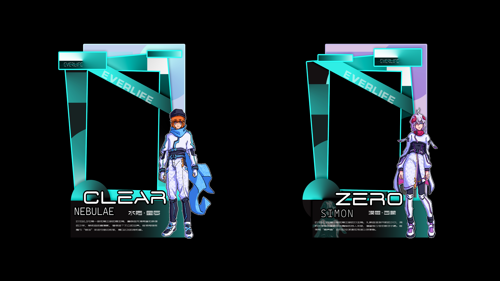

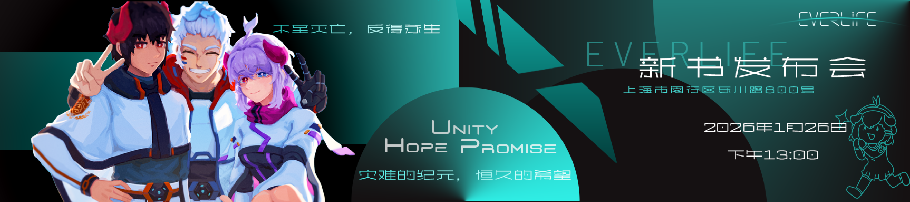


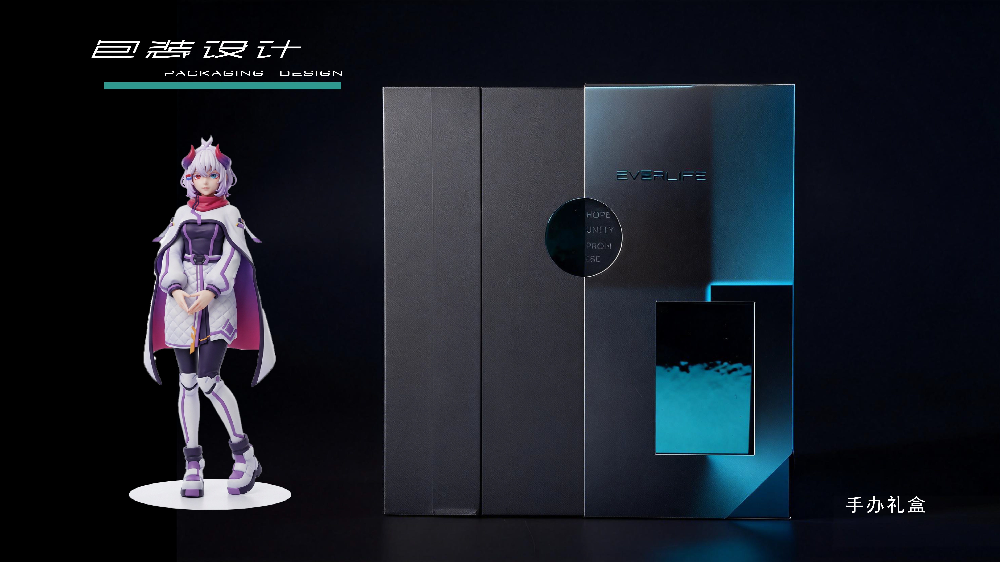